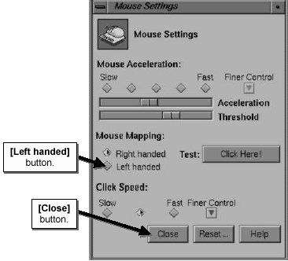

Operating Documentation
Direction 5133330-3, Rev# 14
Signa EXCITE HD 3.0T Service Methods
Module Version 1.0, Version Date 5/15/07
Operating Documentation |
The system Host mouse is default configured for right handed use. It can be configured for permanent or temporary left handed use.
If Signa is up and running, you must first log out and bring the system up to the Login screen. Otherwise, turn the system on and proceed to the Login screen.
Log in as root. The system default password is “operator”. On the root desktop, use the mouse cursor on the ToolChest and click and slide through [Desk Top] then [Customize] then [Mouse].
Push the [Left Handed] button under Mouse Mapping, then push the [Close] Button to accept the changes. See Illustration 1.
Log out of the root desktop and reboot the system. To change the mouse mapping back to Right handed. Repeat this section but push the [Right Handed] button, then reboot the system.
Illustration 1: SET TIME/DATE MENU

Using this method will change the mouse mapping from right handed to left handed, but only until Signa is rebooted, when it will revert back to right handed mapping.
If not already at the Signa scanning level, go there. Open a command window and on the command line type: mouse <Enter>.
Push the [Left Handed] button under Mouse Mapping, then push the [Close] Button to accept the changes. (See Illustration 1.)
To reconfigure the mouse back to right handed operation, repeat this section but push the [Right Handed] button, or reboot Signa.
Reboot the host computer to save settings.